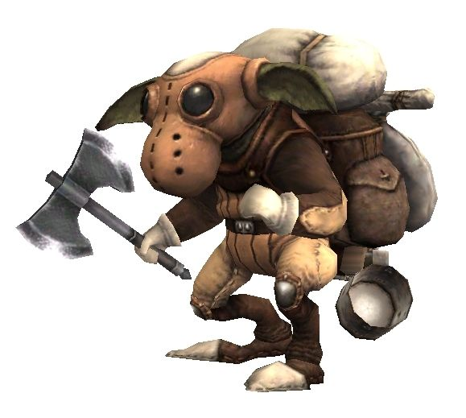
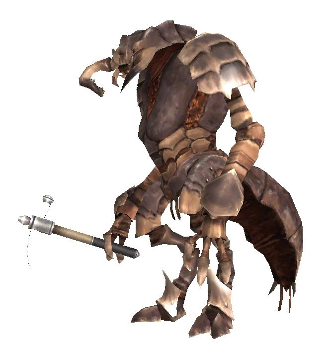
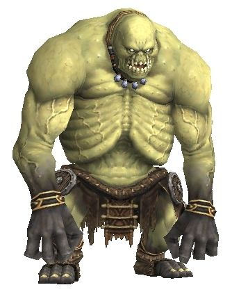
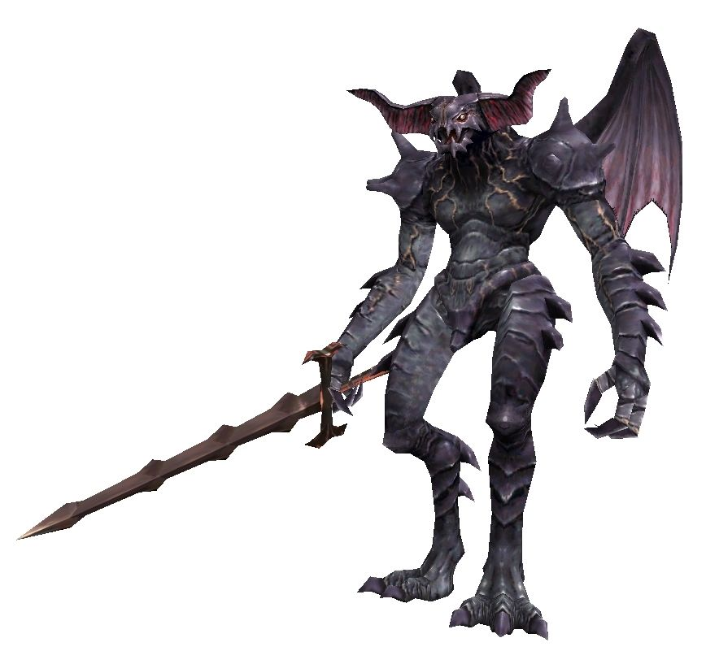
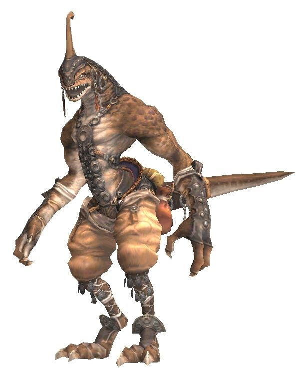
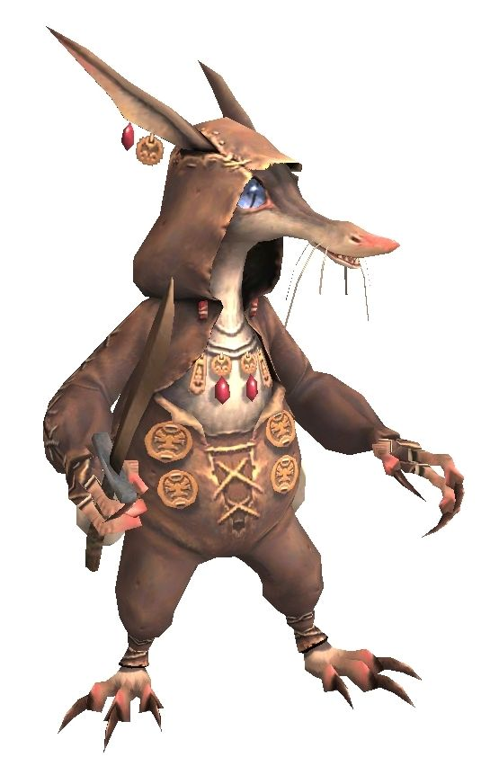

Level 75 reference · Zenith rules
The Many Types of Beastmen
According to legend, the beastmen were created by the god Promathia during the Age of Darkness, their sole purpose is to destroy the five races, created by the Goddess Altana. However, the discoveries of adventurers have revealed the truth, that all life is equal. Here are all of the beastman races that have been encountered by Middle Land adventurers so far.
Orcs
 Image source
Image source
Lust for combat and conquest drives most of the Orcs to join the ranks of their Imperial Army. All Orcs--male and female--are required to participate in years of military training, and even their social structure is based on military ranks.
Orcs have tribal hierarchy based on strength; those who prove most formidable in battle are higher in the pecking-order; stronger Orcs even employ means (such as attaching heavy weights to well-water buckets) to deny those weaker than themselves access to common resources.
From outward appearances, their cultural belief systems seem based in something like shamanism; magic-users, for instance, cover their heads with a hood which prevents the visual senses from being used, presumably in order to heighten their other senses.
While their technology appears rudimentary (most Orcish armor is evidently fashioned from leather, bone, and wood), they do employ metal weapons where available.
Quadav
 Image source
Image source
A race of turtle-like bipeds, the Quadav inhabit certain swampy regions, as well as subterranean caverns, on the continent of Quon.
Apparently closely tied to the earth in which they work and live, the Quadav identify themselves individually and culturally with the materials with which they work.
As their shells thicken with age, the titles given to individual Quadav change. Within their strict caste system, those chosen to serve in the Elite Guard are given titles portraying hard and precious metals, while those chosen to be magicians are given titles taken from precious gems.
The Quadav have long possessed an understanding of metallurgical technology, and have adapted their skills in metalworking to even create fire-fueled incubators with pipes to carry warm air into the ground to warm the damp caves where their eggs are kept.
The incursion of miners from the Bastok nation have repressed the Quadav and driven them out of territories which they have long occupied, to which they respond with aggressive acts against most foreigners they encounter.
Yagudo
 Image source
Image source
The Yagudo are a race of vulture-like bipeds inhabiting the continent of Mindartia.
Violently devout and ritualistic, the Yagudo are a race of religious zealots, their society appearing to be based on a strict religious hierarchy. Yagudo evince little technological development, living instead in austere constructions of wattle-and-daub, as well as cliffside caves.
Their most formidable architectural construct is Castle Oztroja, which may be more appropriately considered a temple than a castle, for it exists as a gateway to the location of the current manifestation of their Godhead, Tzee Xicu. There's also the "the avatar," who is second to Tzee Xicu. Dialogue refers to the Yagudo Avatar as a king while Tzee Xicu is female and the manifest seems to traditionally be a female (much like their Star Sibyl counterpart).
They use few tools or weapons, except for occasional clubs and swords, and wear no armor, excepting the fact that magic-using classes cover their faces with ceremonial masks.
While apparently unconcerned with efforts of conquest, as the Orcish race is, the Yagudo's primary conflict with outsiders comes as a response to disputes over the right to occupy the land which they consider to be hereditarily and traditionally their own.
The Yagudo hold a tentative treaty of non-aggression with the Tarutaru nation of Windurst, representing the only case of such between a Beastman race and a developed nation.
Goblins


Image source
Unlike other beastmen, Goblins can be found in almost all regions across Vana'diel. Their flexible lifestyle and adaptability to the surrounding environment have given them the ability to coexist with other beastmen as well as people. Goblins not only trade with the developed races, but represent a crucial link in the exchange of materials and ideas between the disparate local beastmen races.
Compared to other beastmen, Goblins have developed superior techniques in crafts such as smithing and healing.
Goblin culture appears to indicate a considerable sense of individual opportunism, with members of the race finding a niche for themselves in practically every region and environment in the world.
Goblins do not appear to generally maintain a social hierarchy; Stronger ones do not demonstrate any sense of superiority or command over weaker ones.
Most goblins appear to prefer a semi-solitary lifestyle, rarely congregating for any length of time, except as happenstance permits.
This marks the greatest contrast between them and a subspecies of Goblins known as Moblins, who live and work in a communal effort in underground caverns on the Quon continent. They are forever mining resources out of the ground, and constantly building, moving, and rebuilding Movalpolos, their ongoing encampment.
While Goblins have a refined understanding of explosives technology, they do not employ guns of any sort, preferring simple bombs and intricate fireworks crafted for amusement.
Their Moblin cousins show an even more well-developed technology, refining and smelting ores, utilizing steam power, and having developed underground lighting technology which the 'developed' races have yet to understand.
While Goblins encountered in the wilds should be viewed as potential adversaries, the nature of Goblin ingenuity and opportunism has allowed them to become the only tolerated Beastman race to inhabit major cities for the purposes of trade. A testament to their adaptability and diplomatic potential is the presence of an entirely Goblin-run merchant shop in the heart of the Grand Duchy of Jeuno.
Antica


Image source
The Antica have transformed the former Galkan capital of Altepa into the central location of their empire, which spreads across the islands of Kuzotz. Their militaristic society is built upon advanced personnel management abilities. Upon birth, all individuals are given a number, and a job for which they spend the rest of their lives training. Apart from the information needed to perform their duties, the individual is not allowed any other knowledge. An Antica is only allowed to transfer positions to become a gladiator (used for population control).
The Antica have no concept of personal belongings. All equipment is provided by the Empire, and food rations are based solely on the duties performed by the individual. However, due to their lack of emotion, there is not a single Antica who feels discontent towards this system. This can also be seen on the battlefield. No matter the situation, the lack of fluctuation in morale is the Antica's greatest strength.
Another strength lies in the sheer number of Antica soldiers. In addition to their active legions, an enormous surplus of soldiers lies in stasis within the Antica's stronghold. When revived, the size of their army can increase a hundredfold. However, due to their lack of naval technology, only a few of their troops were able to participate in the Great War campaigns carried out on Quon; their presence had little effect on the outcome of the battles. It is widely believed that had the full Antican army participated in the battles on Quon, the allied forces surely would have been defeated.
While the Antica communicate by fricative sounds made within their necks, they are unable to release loud war cries like the other beastmen. This results in an eerie silence on the battlefield that can send chills down the spine of even the bravest warrior.
Sahagin
 Image source
Image source
These amphibious beastmen reside mainly on the western coastline of the island of Elshimo. They spend the majority of their time practicing primitive fishing techniques to provide an ample supply of shellfish for their survival. Other than to protect their territory, the Sahagin rarely interact with other races. Before the Great War, they adamantly refused invitations by the Shadow Lord to join the beastmen armies--until he convinced them that the steamships of Bastok would eventually destroy their environment. During the war, the Sahagin used their sea maneuvering abilities to attack even the strongest ships in the allied fleet, and were feared by all seafaring soldiers. After the flames of battle had been extinguished, the Sahagin cut off all ties to the other beastmen and returned to their secluded way of life. Apart from limited trading with Norg--they often trade shellfish for metal trinkets salvaged by the pirates--the Sahagin have little contact with the outside world.
Finally, many of the Sahagin worship the elements, and have made deities out of sea serpents and oddly shaped stones within their grotto. However, within their ranks are some who follow the teachings of the Goddess Altana.
Tonberries
These tiny beastmen live solely in the Yhoator Jungle on the eastern half of Elshimo. The Tonberries possess a great deal of anger, or "rancor," in their hearts. It is this anger that binds them as a tribe while driving them to commit terrible acts against all other beings. During the Great War, the majority of the Tonberries remained in their stronghold, the Temple of Uggalepih. However, a few elite members of the tribe were sent to the Shadow Lord to act as his secret agents. These Tonberries would often sneak into the castles of the allied forces and assassinate important generals or political figures. Feared around Vana'diel, these beastmen were often referred to as the "invisible killers."
According to the Tonberries' religion, their creator, the Goddess Uggalepih, had beauty that was envied by the Goddess Altana. A furious Altana transformed Uggalepih into a hideous beast and exiled her to the Outlands. Revenge for Altana's actions is said to be one of the origins of their rancor.
Finally, the reason why they are never found without their lanterns or knives is explained in the following verses, often chanted by the Tonberries before battle:
"O brothersss of rancor, take up thy lanternsss, The truth we shall illuminate. O sistersss of rancor, take up thy knives, To cleave our foesss with barren hate. Through this we ssseek our just reward; Our goddess's glory be ressstored."
Some adventurers and scholars, in recent years, have happened upon circumstantial evidence that links the Tonberry populations in the Temple of Uggalepih, and the Tenshodo-managed ruins of Pso'Xja located in the Northlands district of the Beaucedine Glacier to one of the two ancient races of beings who are thought to have inhabited Vanadiel 10,000 years ago, before the rise of the Five Races.
These adventurers' findings suggest that this race of ancients became degenerate and corrupted by the after effects of an enormous explosion, possibly linked to many of the ancient cermet structures used for teleportation magic around the world. The ruins of the ancient city of Fei'Yin, located at the north end of Beaucedine Glacier, are thought to be the home of the other ancient race, with whom the Tonberries' ancestors waged a final battle, that seems to have destroyed most of those two races, paving the way for the rise of Five races and the Beastmen as well.
Gigas


Image source
"Gigas" is the general term for enormous members of the Gigas, Giant, and Jotunn tribes. Groups of these giants can be found roaming the island of Qufim. As their appearances imply, the Gigas do not possess much in the way of intelligence. While they do possess a language, it consists of the stringing together of simple words or phrases. Their language is often unintelligible--even by members of their own kind. However, what they lack in intelligence is made up for in brute strength. Also, while not as advanced as that of the allied forces, their ship and castle building abilities are comparable to those of the Orcs or Yagudo.
The Gigas were originally from an island far to the north of Quon. Every few decades, the Gigas send a large ship to Qufim to attack the Hume settlements. Their goal is to retrieve supplies and slaves to take back to their homeland. Before the Great War, the Shadow Lord recognized the potential that lay in the giants, and hired a large number of them to fight as mercenaries. After helping to construct Castle Zvahl, the Gigas led the beastman frontline in laying siege to many of the allied forces' fortresses. However, when the beastmen lost the war, the remaining Gigas were left trapped, unable to return to their homeland in the north. With nowhere to go, they set off for Qufim and Delkfutt's Tower, where they remain today--out of reach of the allied armies.
Demons


Image source
These winged beastmen are found mainly in the Valdeaunia Region. It is said that their damage-absorbing outer shell was once armor that was enhanced by an evil enchantment. In addition to their highly advanced fighting skills, they are also known to possess high levels of intelligence, which they have used to acquire various types of potent magic. Due to their pitch-black color and ominous appearance, the inhabitants of Vana'diel came to call these beastmen "Demons." However, Demons refer to themselves as "the Kindred." This, along with many other questions about their origins, still remain unanswered.
During the Great War, the Demons served as the Shadow Lord's elite guard, ruling over the other beastmen with fear. To ensure the other beastmen were following orders, many of the Demons would act as messengers, traveling to and from Castle Zvahl. When the Great War was over, the Demons vanished. However, with recent rumors of the Shadow Lord's return, there have been Demon sightings in Valdeaunia. While there are many theories about their origin, the most popular one is that the Shadow Lord made a pact with them after traveling deep into hell.
Mamool Ja


Image source
The Mamool Ja are a group of beastmen that hold dominion over the Mamool Ja Savagelands, a land hostile to the Near Eastern Aht Urhgan Empire.
Referring to themselves as the Mamool Ja, meaning "brethren of the shining scale," the inhabitants of the Savagelands are organized into four biologically different classes that consist of warriors, aquatics, sages, and knights. The Mamool Ja have been paying tribute to the Aht Urhgan Empire since ages past, and are known for their republican form of government. Their nation is ruled by a council of four overlords, one selected from each class. The Savagelands' recent uprising against the empire seems connected to the emergence of a prominent leader known as the "The Autarch."
Trolls
These massive beastmen make their homes around Mount Zhayolm. The Trolls originally inhabited the precipitous mountain ranges that lie in the center of the Aradjiah continent. However, through the generations, ranks of Trolls made use of their brawn and courage to join the Gigas from the north and the Mithra from the south in the mercenary trade. The Trolls' ancestors served as a mercenary unit in the Imperial Army, and were afterwards hired by the Moblins. The reasons for their move to Mount Zhayolm are debatable, but they were able to maintain autonomy over their mercenary lands (also known as Halvung Territory) by paying tribute to the Empire until the conflict for the Astral Candescence began. Thanks to the Moblins' generous technological offerings, the Troll mercenaries now possess equipment superior to that of the other Near Eastern beastmen, including naphtha-powered incendiary weapons and mass-produced cast metal helmets. According to rumor, the Trolls also undergo anatomy-enhancing surgical operations in order to survive in the harshest of environments. Their might and hostility towards Aht Urhgan make the Trolls the Imperial capital's greatest threat.
Lamiae
A bewitching race of beastmen with an upper body like that of a Hume woman and a lower body resembling that of a venomous serpent. The Lamiae are few in number compared to the other beastmen inhabitants of the Near East. However, they have ensorceled the bones of fallen soldiers, creating an undead army of considerable size to defend their reef settlements. Lamiae are known to sneak into towns in the depths of night, wielding powerful bows and hunting townspeople to replenish their armies; hence the Near Easterners' dread of sunset. According to rumor, Lamiae are not technically a race of beastmen, but actually a form of organic weapon (also known as a chimera), created by alchemists fusing the parts of multiple organisms.
Among the Undead Swarm's ranks are the Lamiae's sisters, the Merrows.
Qiqirn


Image source
These diminutive beastmen reside together with the civilized races of Vana'diel. Most Qiqirn make their home in a city located in the heart of the Aht Urhgan Empire's western half. They tend to have an easygoing and cheerful personality, but have difficulty speaking the common language due to their unusual vocal cords. Even so, it is not uncommon to hire a Qiqirn as a shop or guild assistant, thanks to their reliability and surprisingly quick wits. Some Qiqirn have even made use of their sharp sense of smell to become extremely wealthy in the production of fragrances. According to their oral tradition, the ancestors of the Qiqirn lived a nomadic life in the northern lands. Even today, remnants of the Qiqirn's ancient lifestyle may be seen in their unique customs, such as their sheep-led wagon homes, their leather clothing, and their habit of carrying their valuables with them at all times.
Poroggos
Discovered by Professor Clavauert and named after the eccentric frog princess Samariri, these beastmen were born in the Age of Magic. Feeling sorry for the toads that were trampled on the paths of Windurst Waters, Samariri cast a spell that made the toads grow and allowed them to walk on two feet. The Poroggos eventually learned the Tarutaru language and the arts of magic and saw themselves as brothers and sisters to the people of Vana'diel, but the Windurstian military quickly disposed of what they saw as a threat. They were originally believed to be a myth or extinct but have recently resurfaced and joined the Mamool Ja Savages, presumably seeking revenge on the Tarutaru race.
Organization
Beastmen are arranged into 'tiers' of difficulty. Each tier generally has three or four specific types of each race of beastmen in it and represents a 10-level span. Certain types of beastmen, such as Tonberries and Antica, may not be represented in the lower tiers, as there are no existing beastmen in that level range.
Adapted from Eden Wiki: Category:Beastmen · Contributors and history · CC BY-SA 4.0. Revision 13894. Layout, links and optional background text adapted for Zenith.